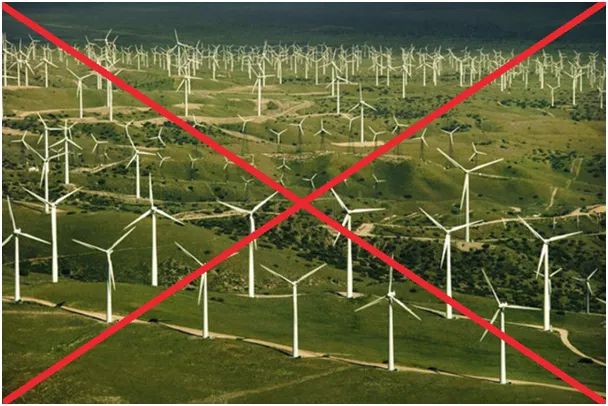
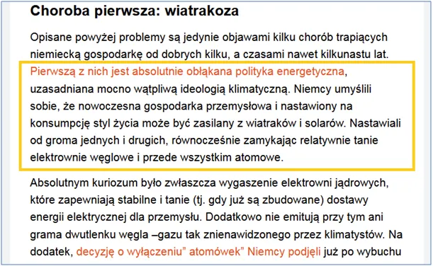

Wajcha cała wstecz!
Czołowy portal dezinformacji gospodarczej staje na głowie.
Politycznie mamy już Nowy Rok i czytamy w mainstreamie, że: "absolutnie obłąkana polityka energetyczna, uzasadniana mocno wątpliwą ideologią klimatyczną. Niemcy umyślili sobie, że nowoczesna gospodarka przemysłowa i nastawiony na konsumpcję styl życia może być zasilany z wiatraków i solarów. Nastawiali od groma jednych i drugich, równocześnie zamykając relatywnie tanie elektrownie węglowe i przede wszystkim atomowe."

To nie sen, gospodarka Niemiec i potężna machina biurokratyczna potrzebuje taniej energii. Nie ma czasu na płynną zmianę kursu, rozkaz brzmi cała wstecz, to rozkaz wielkiego kapitału, który przez dekady inwestował w akcje niemieckich firm, a teraz nie dość, że nie dostaje dywidendy, to jeszcze z dnia na dzień widmo gwałtownego spadku ich wartości rośnie na horyzoncie.

Jest tak źle, że nawet Diesel jest już cacy jak czytamy w tekście, a demograficznym problemem Niemiec jest "ahmedoza". Oj tak nieładnie można już pisać sugerując pochodzenie etniczne?
Idzie nowe już 27 grudnia, przygotujcie się po Trzech Królach, bo do mikrofonu teraz mają dostęp wyznawcy "Sześciu Króli z korektą".
bankier.pl/wiadomosc/Niemcy-chorym-czlowiekiem-Europy-8668703.html
Paweł Klimczewski